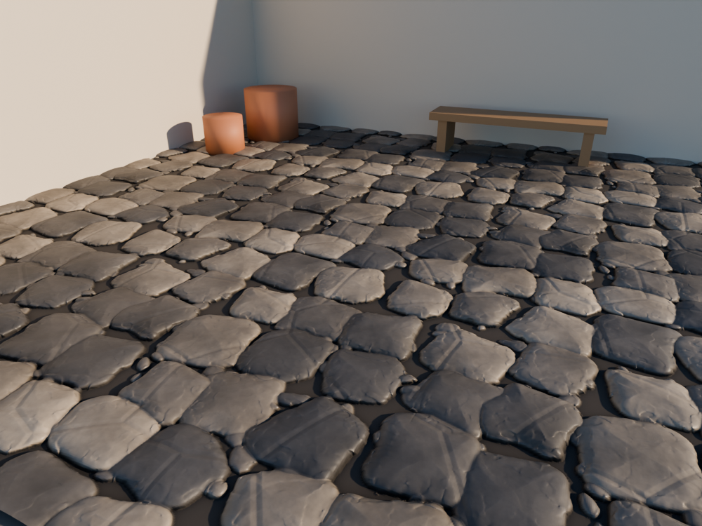
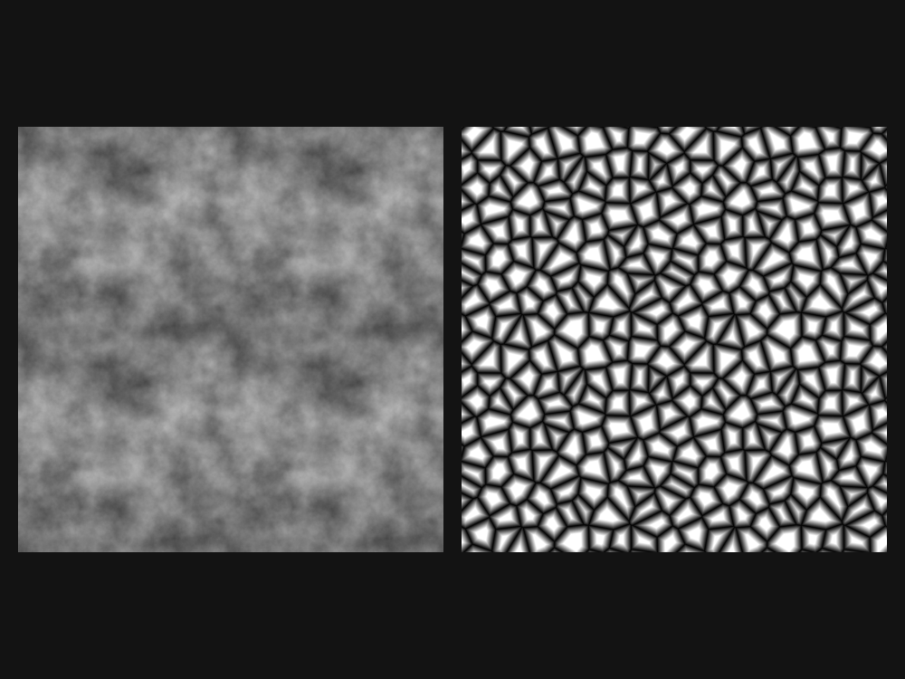
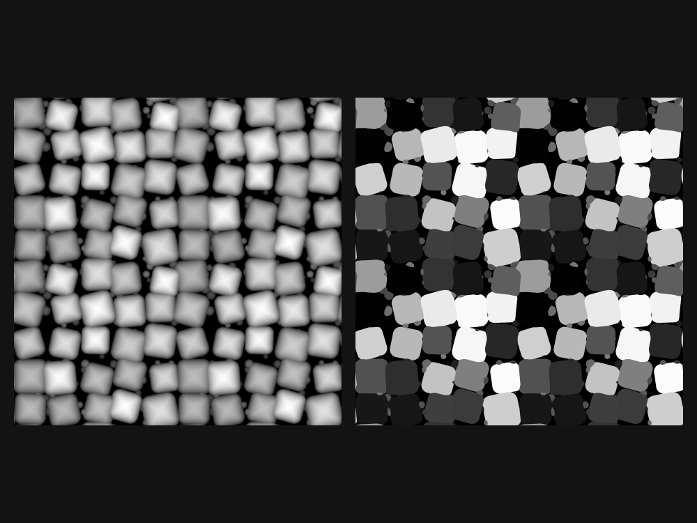
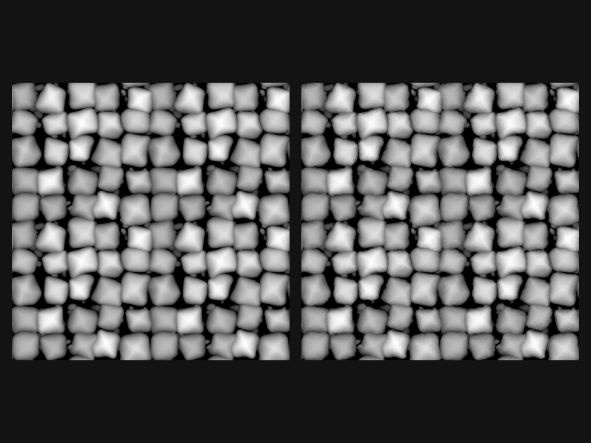
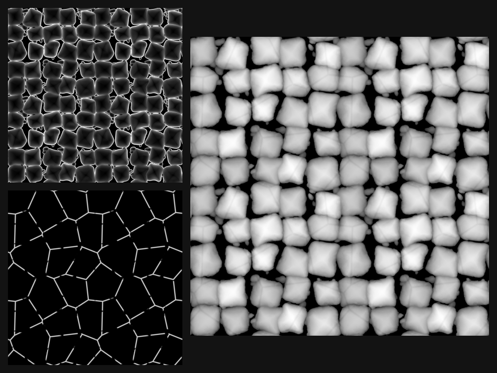
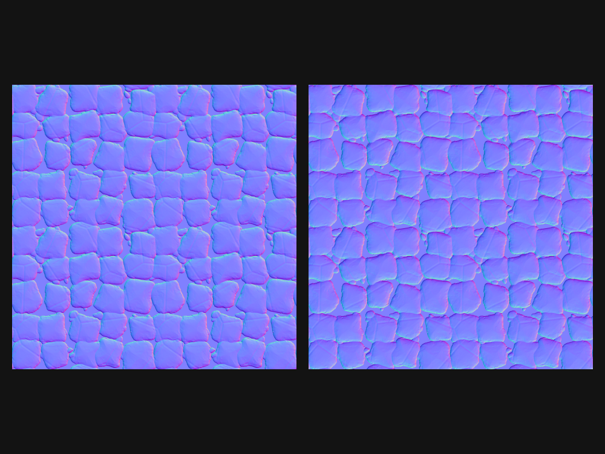
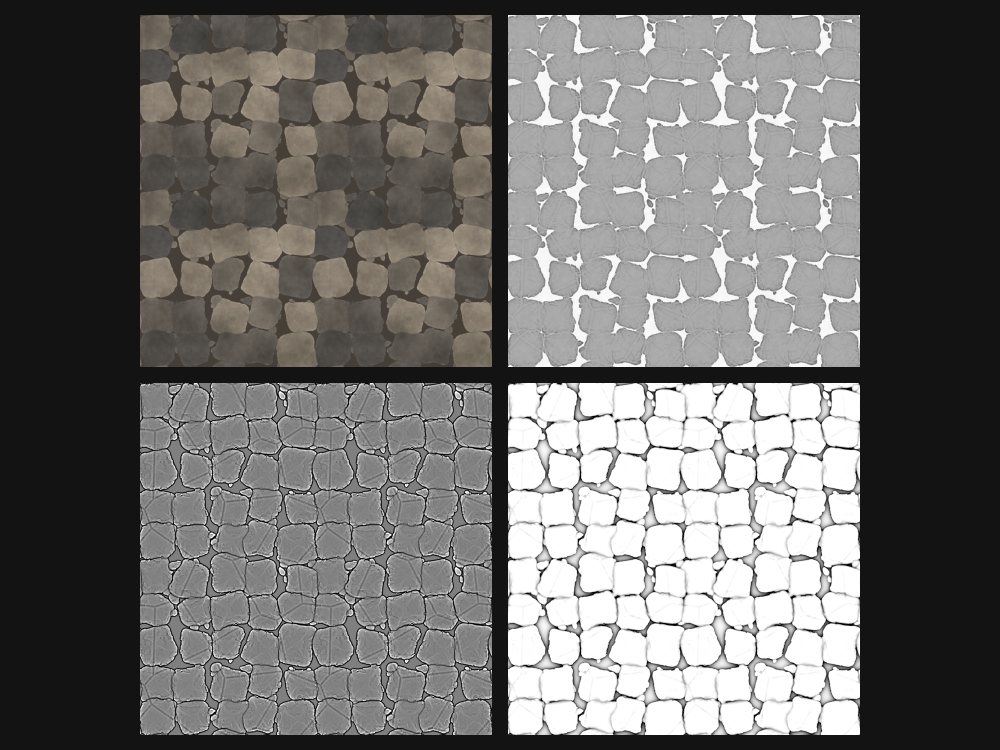
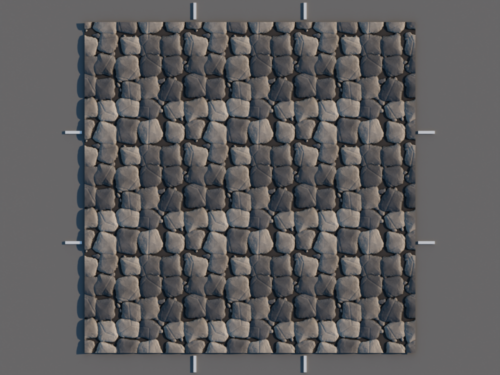

Products › BaseNode Packs › Texture Lab › Tutorial: Tileable stone
Tileable stone
A cobbled floor, made the way a Substance Designer artist makes one: no photo, no sculpt, a graph of generators and filters that ends in the maps a material needs. Here the graph is Blender's compositor. The texture tiles: lay it nine times on a floor and nobody finds where one copy ends.

You will learn
- The craft. The order of a procedural material: atoms, a pattern laid by a tile sampler, erosion by warp and slope blur, a height shaped with edges and levels, then the maps derived from it (normal, curvature, occlusion), the colour and roughness last, and why every step must wrap at the borders.
- The .bn. A compositor graph with several outputs, one per map, written to files in one render; a shader group that reads them back.
Prerequisites
This page assumes you have read Lunar ground, or know the basics of a .bn file: a graph, its nodes as calls, named outputs, the pipe |>.
Knowing what a height map and a normal map are helps; no Substance Designer is needed.
Before you start
You need Blender 5, the Base Node add-on, version 0.13.1 or later, and the Texture Lab pack, sold by the author of Base Node apart from the open source project: it carries the two modules this tutorial uses. The steps are free to read and to copy; the modules they call are not, and without the pack a step does not build.
| Module | Comes with | What it gives |
|---|---|---|
texture_atoms | Texture Lab | Generators that tile: Perlin noise and ridges read on a torus, Voronoi cells on a grid that wraps, stripes, checkers, shapes, and a tile sampler that lays a shape over a grid with a seeded random offset, size, rotation and grey per tile. |
texture_filters | Texture Lab | Filters that wrap at the borders: blurs, warp, directional warp, slope blur, edge detection, histogram scan and range, levels, height to normal (OpenGL or DirectX), curvature, ambient occlusion from heights. |
Every block below is a complete .bn file, its code beside the nodes it builds. Two ways to try a step:
- Drag it. Drag the file icon of its block, or its title, onto Blender and keep Import into the .blend:
tileable_stonebecomes the scene's compositor, if the scene has none yet. A click on the file icon downloads the file instead. - Paste it. Press the copy button of its block, open the Compositor, press Ctrl+Shift+V.
The scene needs nothing in it: the graph draws its texture on a canvas of its own, 1024 pixels square. Render with F12: you see the first output of the step. To see another, Ctrl+Shift+click its node in the Compositor and look at the Viewer Node image.
The pictures are made from these exact files by render.py: each output written to an EXR, then shown two by two, so that a seam would show where the copies meet.
A graph that ends in maps
A material for a game or a film is a set of images that share one surface: a height, a normal map, a colour (the albedo), a roughness, an occlusion. Painting them by hand, they never quite agree. Computing them from one height, they always do: the normal is the slope of that height, the occlusion is where it is low among high, the dirt goes where the occlusion is dark.
So most of the work is the height. It is built like a sculpture in reverse: lay simple shapes, break their regularity, wear them, cut them, then level the result. Every filter reads a pixel's neighbours, and a pixel on the right border has its neighbours on the left border: the filters of texture_filters wrap, so that what tiles at the start still tiles at the end.
1. Atoms that tile
Two generators to start, the atoms of everything that follows: a fractal noise and Voronoi cells.
step1_atoms.bn: tileable_stone
- The canvas.
texture_canvasgives a square image of 1024 pixels, whatever the scene renders. Every generator draws on it in tile coordinates, 0 to 1 across. - Why they tile. A plain Noise Texture does not: its right column has nothing to do with its left one.
tileable_noisereads Blender's 4D Noise Texture on a torus, where u = 1 is the same point as u = 0.tileable_cellslays one point in each cell of a grid, 9 by 9 here, and a cell past the right border is the first one on the left.scaleis the number of features across, a whole number for the cells; it must stay the same for the texture to keep tiling. - Several outputs. The graph returns
(noise: …, cells: …): two maps, two sockets of its output, as Substance's graph outputs.

2. Stones laid by a tile sampler
A cobbled floor is a grid that tries not to look like one. tile_sampler lays a shape in each cell of a grid and gives each a random offset, size, rotation and grey, from a seed.
step2_stones.bn: tileable_stone
- The stones. Rounded squares (
shape: Square,roundness), domed (profile: Dome), on five by five.size: 1.1lets them overlap a little: where two meet, the higher shows, so they press against each other as stones do. - The pebbles. A second sampler, eleven by eleven, of small discs scattered far from their cells (
offset_random: 0.9). Scaled down to 0.45, they only show in the gaps. idis a random grey per stone: in step 6 it gives each stone its tone.- The seed. Change it and you get another floor; keep it and you get the same one, to the bit.

3. Warp and slope blur
Two filters that every Substance graph uses, here to take the stones out of their grid and to wear them.
step3_erosion.bn: tileable_stone
- Warp. Each pixel is read a little away from where it is, along the slope of a broad noise (
wobble). The straight sides bend, each stone differently.intensityis in tiles for a slope of one height per tile: small numbers are already large. It gives the same bend at any size of the texture. - Slope blur. The height is smeared down the slopes of a finer noise (
grit): its borders crumble as if water and frost had worked on them.intensityis how far, in tiles. - The order. Warp first, on clean shapes; erosion after, on the bent ones. Swapped, the warp would stretch the crumbs.

4. Edges, cracks and levels
Now the height is shaped: chips on the edges, cracks across the stones, a grain on top, then levels to set where the gaps and the tops are.
step4_shape.bn: tileable_stone
- Chips.
edge_detectis 1 on the borders of the warped stones. Times ahistogram_scanof the grit, only part of the borders: there the height drops a little, as if knocked off. - Cracks. The cells of step 1, at 3 across:
histogram_scankeeps only what is very near their edges, a thin line.on_stone, another scan, keeps the cracks on the stones and out of the gaps. - Levels.
in_low: 0.08takes the bottom of the gaps to 0;gamma: 1.6raises the mid-tones, so that the domes flatten into worn tops.
A histogram_scan is a threshold with a soft ramp: position is where it cuts, contrast how sharply. It turns any grey map into a mask.

Try: set gamma of levels to 0.8: the stones round off like river pebbles. Set it to 3.0: they become flat slabs.
5. Normal maps, OpenGL and DirectX
A normal map stores the slope of the surface in colour: x to the right in red, y in green, up out of the surface in blue. height_to_normal computes it from the height, wrapping.
step5_normal.bn: tileable_stone
depthis how high a height of 1 stands, in tiles: 0.02 of a tile of 2 m is 4 cm, a cobble's relief. The larger, the stronger the normals.- OpenGL or DirectX. The two conventions differ by the sign of green: up the image in OpenGL, down in DirectX. Blender, Unity and Godot read OpenGL; Unreal and many game engines read DirectX. A map of the wrong one lights the stones from below.
directx: trueflips it.

6. Curvature, occlusion, colour
The height says where the material is high; two more maps say what that means for the light and the dirt, and from those come the colour and the roughness.
step6_maps.bn: tileable_stone
- Curvature.
height_curvature: 0.5 where it is flat, brighter on edges and bumps, darker in hollows. It is taken on the height blurred over 6 pixels, so that it follows the shapes and not the grain. - Occlusion.
height_occlusiondarkens a pixel by how much the heights around it, up to 64 pixels away, stand above it: the gaps and the feet of the stones. - Colour. A tone per stone from
id, stained by the noise of step 1 (throughlevels, to stretch its contrast), speckled; dark dirt in the gaps; edges worn lighter where the curvature is high, as a sole polishes them. - Roughness. Rough stone, rougher dirt, a little smoother on the worn edges.

7. The maps on a floor
The last step gives the five maps a material needs, and a shader group, stone_surface, that reads them back.
step7_floor.bn: tileable_stone, stone_surface
- Write the maps. In the Compositor, add a File Output node, give it one input per output of
tileable_stone(albedo,height,normal,roughness,occlusion), link them, pick OpenEXR, 32 bits, and render once: Blender writes the five files.render.pydoes exactly that. - Read them back. In the material of a plane, one Image Texture per map, all on the same coordinates scaled so that a tile is 2 m. The albedo is a colour (Linear Rec.709 for an EXR); the other four are data: Non-Color.
- Plug them in. Into
stone_surface: itsbsdfto the Surface of the Material Output, itsdisplacementto Displacement. In the material's settings, set Displacement to Displacement and Bump, and give the plane enough vertices: here a grid of 900 by 900 for 6 m.
The displacement moves the vertices by the height, depth metres high: the stones stand out against the light and throw shadows. The normal map adds what the vertices are too far apart to carry: the grain, the cracks. The occlusion darkens the albedo by ao_amount, for the dirt light does not reach even where Cycles finds it lit.

The hero picture of this page is the same floor, from a standing eye, in a courtyard at the end of the afternoon.
The knobs
Each filter has a few inputs; these change the floor most:
| Where | Input | What it does |
|---|---|---|
tile_sampler of the stones | columns, rows, size | How many stones across, and how tightly they pack. |
tile_sampler | offset_random, rotation_random, seed | How far they stray from the grid, how much they turn, which floor you get. |
warp | intensity | How much the sides bend; and the scale of wobble, how wide the bends. |
slope_blur | intensity | How worn the borders are. |
levels | in_low, gamma | How wide the gaps, how flat the tops. |
height_to_normal | depth, directx | How strong the normals, and for which engine. |
stone_surface | depth, ao_amount | How high the displacement, how much the occlusion darkens the colour. |
Try: on step 7, set columns and rows of the stones to 3, and size of the pebbles to 1.0: large flagstones in a bed of gravel. Every map follows, because every map comes from the height.
Changing texture_canvas's size to 2048 doubles the detail, and the render time; the sizes given in pixels (height_blur, height_occlusion) then cover half as much of the texture, so double them too.
Take it to Blender
The finished graph, in one file. Drag the card onto Blender and keep Import into the .blend: tileable_stone becomes the scene's compositor, if it has none yet, and stone_surface comes as a shader group. A click on the card downloads the file.
The steps before it, to start again from any of them:
The files, with the script that renders this page's pictures, are in examples/tutorials/tileable_stone/.